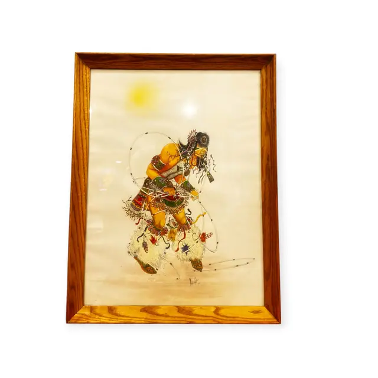
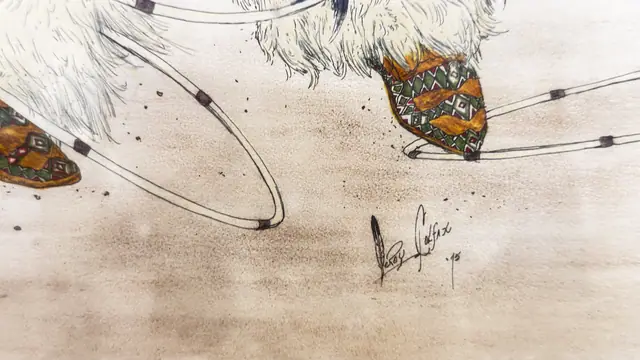

Paintings & Prints
Native American Hoop Dancer Watercolour, LeRoy Colfax, Signed, Framed
LeRoy Colfax · late 20th century, dated in the signature
Price Upon Request


About the Item
LeRoy Colfax. A single standing figure fills the sheet, shown mid-step with feathered bustle and beaded regalia, arms extended through a set of dance hoops. The handling is transparent watercolour and gouache over fine pen drawing, with warm earth reds, turquoise, ochre and black against an unpainted paper ground that gives the figure a floating, isolated presence. The paper is set close to a plain quarter-sawn oak frame under glass. Medium: watercolour and ink on paper. Signed lower centre right of the sheet, reading "LeRoy Colfax '95". Inscribed on the reverse or mount: LeRoy Colfax '95 (signed in ink, the initial letter drawn as a feather). Condition: Glass glare across the upper sheet; no foxing, tears or fading visible.
Details
- Creator:
- LeRoy Colfax
- Creation Year:
- late 20th century, dated in the signature
- Dimensions:
- Height: 27.7 in (70.36 cm)
Width: 20.4 in (51.82 cm)
outside of frame - Medium:
- watercolour and ink on paper
- Period:
- 20Th
- Condition:
- Offered in the condition shown in the photographs.
- Reference Number:
- VO-261
- Documentation:
- No certificate photographed.
- Gallery Location:
- LeRoy Colfax '95 (signed in ink, the initial letter drawn as a feather)